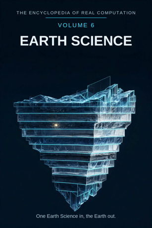

Chron.
The Encyclopedia of Real Computation

One Earth Science in, the Earth out.
Home domain: Topos
One Earth Science in, the Earth out.
◉ A Principle .... Earth Science ◎ B Purpose ...... Exploration ◉·◉ A.A Alpha ...... the Geologist ◉·◎ A.B Cross ...... the Expedition △ X Primitive .... Rocks ⚙ Y Protocol ..... Surveying ⬢ Z Product ...... the Landscape ◐ i State ........ the Unseen ⚖ j Condition .... the Exposure ⊞ N Set .......... the Spheres ◷ h Time ......... Deep Time ▣ C Context ...... the Field ▦ D Domain ....... the Terrain ♥ E Emotion ...... the Sublime ➤ F Intention .... Mapping ↻ pi Cycle ........ the Rock Cycle ➔ phi Step ......... the Stratum ⚄ e Probability .. the Forecast • h-bar Planck ..... the Grain
Σ sigma Summation .. the Survey
◈ gamma Scale ...... the Scale Δ delta Change ..... the Drift ⁂ sigma' Options ... the Formations Ω Omega Answer ..... the Earth
Every volume of this encyclopedia does the same work. The Prologue figures the subject whole. Then come twenty-four chapters, one per term, each doing four jobs in plain English: what the term means, where it sits in the computation, how it works on the volume's one running example, and what breaks without it. Then the Data, whole. Then the Crossings. Then the Sum. The running example of this volume is one cliff face, read layer by layer: bands of stone stacked like the pages of a book, each band a world that was once the surface, readable by anyone taught to read it slowly.
Earth Science: the study of the earth - its stone, its waters, its air, and the living skin over all three - and of how they made the ground underfoot. Exploration: the going-out to look; the field's demand that the earth be met where it stands, not imagined at a desk.
◉ Earth Science. ◎ Exploration = the root of Earth Science: aimed
at itself, the field asks what lies beyond the next ridge - and under this one. ◉·◉ the Geologist: earth science turned on itself becomes a person who practises it. ◉·◎ the Expedition: earth science crossed with exploration - the journey that carries the crossing. △ Rocks = Earth Science parted over the Spheres.
⚙ Surveying = the function of the Rocks, the measuring applied. ⬢ the Landscape = Rocks times Surveying, the product, once the
Expedition has carried them through Exploration. ◐ the Unseen = the root of negative Earth Science: the buried, which the field infers and cannot yet touch. ⚖ the Exposure = the condition, outcrop by outcrop: the earth can only be read where it shows itself. ⊞ the Spheres = the set: Lithosphere, Hydrosphere, Atmosphere, Biosphere. ◷ Deep Time: the field's clock, running in millions of years. ▣ the Field: where earth science stands - out in it. ▦ the Terrain = the Spheres crossed by the Study.
♥ the Sublime = the difference a landing makes. ➤ Mapping = the
intention that carries a context. ↻ the Rock Cycle: stone is melted, raised, worn, and buried, round and round. ➔ the Stratum: one layer, one step in the stack. ⚄ the Forecast: the odds the field prints on tomorrow's weather and next century's coast.
• the Grain: the least piece, one crystal of the rock. Σ the
Survey: all of the field, summed as one measured earth. ◈ the Scale: from the grain to the globe. Δ the Drift: the continents themselves, in slow motion. ⁂ the Formations: the spread of named bodies of rock not yet read. Ω the Earth: the answer the field resolves into - the planet, known.
IF If Earth Science to Exploration, then Rocks & Surveying is the Landscape, or the Unseen while the Exposure for the Spheres, through Deep Time, in the Field, the Terrain, the Sublime, Mapping, at the Rock Cycle by the Stratum, with the Forecast over the Grain - sum the Survey, scale the Scale, change the Drift, options the Formations - therefore the Earth.
Stands below, after the chapters, figured whole: the Spheres crossed by the Study, sixteen cells, and the six contexts.
The seven laws, run on this seed. Pythagoras: Earth Science squared plus Exploration squared overlays the Field squared - the triangle checks in the Where, the If, and the Data identically. Law of cosines: the tilt between earth science and exploration is set by context - in the armchair the angle is steep and the claims are large; at the cliff edge it is nearly flat and the claims fit in a notebook. Binomial: the middle term is the Expedition, counted twice - the land shapes the expedition, and the expedition, returning with samples, reshapes the reading of the land. AM-GM: Exploration is the geometric mean between Earth Science and the One. Log law: the Scale of the Landscape is the Scale of the Rocks plus the Scale of the Surveying - reach adds where work multiplies. Complex modulus: the Unseen is counted in the size of the field; the buried belongs to the terrain's measure, and earth science is larger, not smaller, for mapping what it cannot reach. Triangle inequality: no route from Rocks to Landscape is shorter than the Expedition; skip the going and you hold a catalogue of stones, not a country.
Earth science begins with the ground itself: rocks, picked up one at a time and asked their names. Its work is surveying - measuring the land into lines, levels, and layers - and its product is the landscape understood: not a view but a history, in which every cliff is a stack of drowned seas and every valley a signature of the water that left. The discipline is candid about its shadow: most of its subject is buried, and it says so, mapping the unseen by inference and marking the inference as inference. Its time is the deepest of any field's - it thinks in millions of years as a matter of routine, and finds our own brief tenancy written small, in the topmost layer. And its finish is the earth itself, known as a home is known: not exhaustively, but truly, room by room and layer by layer. One Earth Science in, the Earth out.
What it means. Earth science is the study of the planet we stand on: its stone shell, its waters, its air, and the living film across all three - how they were made, how they move, and how they will move next. It is the only field whose laboratory is also our address.
Where it sits. Earth Science is the Principle of this volume, the seed every other term grows from: Exploration is its root, the Geologist its self-product, the Expedition its cross.
How it works. Take one cliff face, somewhere the sea or a road cut has sliced the ground open, and ask the field's simplest question about it: what is this, layer by layer? Everything in this volume is earth science answering that one question completely - reading bands of stone the way a librarian reads shelves.
What breaks without it. Every other volume quietly assumes this one: chemistry's bench stands on ground, biology's wild grows on soil, society's town sits in a valley somebody chose. Remove the Principle and the other fields keep their subjects and lose the stage under all of them.
What it means. Exploration is the going-out to look: walking the ground, sinking the shaft, sailing the coast, because this field's facts are not delivered to desks. Exploration is what earth science is for at the root - the replacement of rumour about places with witness of them.
Where it sits. Exploration is the Purpose, B = the square root of A: earth science aimed at itself extracts the demand to go. And B squared = A: ground fully explored settles back into earth science itself, becoming the map the next party starts from.
How it works. The cliff cannot be read from the valley floor alone. Somebody has to climb to its bands, hammer in hand, and stand where the layers can be touched. The purpose is discharged in boots, not in armchairs - which is why this volume's Purpose wears the oldest name in the field's vocabulary.
What breaks without it. Without exploration, earth science is geography by hearsay: coastlines copied from older maps, inland left blank or filled with invention. The field's whole warrant is that somebody went.
What it means. The geologist is earth science embodied: a person in whom the field's habits have become reflexes - reading a hillside at a glance, hearing a hammer's ring and knowing the rock, tasting the difference between a fresh face and a weathered one.
Where it sits. The Alpha, A times A: the field turned on itself. The same cliff held by a walker and by a geologist differs in the company its layers keep: for the walker, stripes; for the geologist, a drowned sea, a desert, a river's old floor - each band with its evidence attached.
How it works. Hand the cliff to a beginner and he photographs it. Hand it to a geologist and she starts at the bottom, where the oldest band lies, and reads upward through time, tapping, sketching, bagging. The holder is the difference: the cliff is the same; the reading is another order of thing.
What breaks without it. Unowned earth science is a cabinet of labelled rocks nobody can extend: specimens without a reader are a coastline with no one sailing from it.
What it means. The expedition is the interaction term: earth science crossed with exploration - the organised going itself, with its route, its season, its samples carried home. It is where the work happens, the middle term carrying force in both directions.
Where it sits. The Cross, A times B, counted twice: the land shapes the expedition (the cliff decides where the ropes go), and the expedition reshapes the land's story (what is sampled is what can ever be said).
How it works. The cliff expedition is a small one - a day, a hammer, a notebook - but it runs both ways at once: the party plans by the cliff's map, and returns having re-drawn the map. Every grand expedition in the field's history, to poles and ocean floors, is this same cross at larger scale.
What breaks without it. With either factor at zero - knowledge that will not travel, or travelling with no knowledge packed - the product is zero and nothing comes home. The expedition is where this field catches fire.
What it means. Rocks are the primitive material: one hand-specimen at a time, definite in grain and hardness and weight. A rock makes no claim by itself; it is the clay. Earth science parted over its spheres arrives first as rocks - the stone the whole reading is spelled from.
Where it sits. X = A times N: the Principle spread across the Set. Every sphere receives the principle as its own material - the lithosphere as stone, the hydrosphere as the stone's great carver, the air and the living film as the stone's weatherers.
How it works. The cliff begins as rocks: a pale band of limestone, a dark band of shale, a gritty band of sandstone, picked loose, turned in the hand, named. Nothing has been claimed yet except that these are the bands, in this order, and the order is worth reading. The reading is the volume; the clay is these.
What breaks without it. No primitives, no products: a field with nothing elementary to handle has only scenery, and scenery cannot be checked from inside itself.
What it means. Surveying is the measuring applied to the land: levels, bearings, sections drawn true to scale - the disciplined conversion of ground walked into ground recorded. The protocol is public: any party following it over the same cliff draws the same section, which is the whole point.
Where it sits. Y = f(X), with f the root of Exploration: the working is governed by the purpose - the measuring is chosen because it carries toward knowing the place, not merely toward filling the notebook.
How it works. The cliff gets its section: a vertical line on the page, each band's thickness measured and entered, oldest at the bottom, with the sampler's marks where the hammer fell. Two numbers - height and thickness - and the cliff is already halfway from scenery to evidence. The working ran ahead of the story, as good protocol should.
What breaks without it. Rocks without surveying stay souvenirs: handled, admired, unrecorded, and lost to everyone who was not there. Surveying is the field's hands.
What it means. The landscape is the product: rocks worked by surveying and carried across an expedition, arriving as ground understood - a place whose present shape is explained by its past. Landscapes are this field's load-bearing walls: the units in which maps, farms, and towns are planned.
Where it sits. Z = X times Y: the product, area-shaped in the most literal sense in this encyclopedia - it has extent exactly as far as its factors reach, and it can always be factored back for audit: which rocks, which measurements, which journey.
How it works. The cliff's product is a landscape with a biography: the limestone a sea's floor, the shale a quiet deep, the sandstone a shore that came and went - the whole face now readable as a country that rose and sank and rose. The walker sees a wall; the volume's reader sees a drowned world standing on end.
What breaks without it. Measuring that never sets into landscape is exercise, not earth science. The landscape is where effort becomes inheritance - the next party starts from it.
What it means. The unseen is earth science's shadow, and it is most of the subject: the buried layers below every outcrop, the inside of the planet, which no shaft has reached and no eye has seen. The field knows more about the moon's face than about the ground a mile down, and says so on its maps.
Where it sits. i = the root of negative A: the state of the principle itself, counted in the field's size by the modulus law. The shadow is not outside earth science; the inference of the buried - from tremors, from wells, from the cliff's own tilted bands - is half its method.
How it works. The cliff shows perhaps fifty feet of stacked worlds. Below its foot, the same bands run on downward, unseen, and the geologist draws them in - dashed. That dashed line is this chapter's whole doctrine: the unseen entered on the map, marked as unseen, at its best-measured depth.
What breaks without it. A field that hid its unseen would draw its maps solid to the centre, and the first deep well would make a liar of the whole survey. Naming the shadow is what lets the field trust its light.
What it means. The exposure - the outcrop, the road cut, the quarry face - is the condition this field's knowledge stands under: the earth can only be read where it shows itself. Covered ground is silent ground, and the map must say which is which.
Where it sits. j, the Condition: the root taken element by element. This reading stands while this exposure stands; let the cliff be grassed over or built upon, and the reading survives only in the notebook. Verification here is granular: this band, this face, this season's light.
How it works. The cliff is a gift of exposure: fifty feet of earth with its cover stripped by sea or by blasting. The same bands under the field next door are identical and unreadable. The condition is not a footnote to the fact; in this field, it is half the fact.
What breaks without it. Unstated exposures are smuggled certainties: a reading drawn from one lucky cliff printed as the truth of a whole county. The field that prints its conditions can be argued with - and re-read at the next cut.
What it means. The spheres are earth science's great divisions: the Lithosphere, the shell of stone; the Hydrosphere, all the waters; the Atmosphere, the ocean of air; the Biosphere, the living film. Each sphere is the whole planet read in one direction, and the field's drama is that none of them acts alone.
Where it sits. N, the Set - the term everything is counted in: rocks are A times N, the domain is N crossed by the Study, the sum runs over N. The set is complete as this volume defines it, four members entire, and the crossings among them are where the field lives.
How it works. The cliff visits all four spheres in one glance: the stone is the lithosphere, the sea at its foot the hydrosphere, the wind worrying its top the atmosphere, and the grass and nesting birds the biosphere - holding the face, weathering it, and reading it with roots. One outcrop, four spheres, no border crossed illegally.
What breaks without it. Unsorted earth science is four separate wonderings - stone men, water men, weather men - each missing the others' causes. The spheres are a sorting that exists to be crossed.
What it means. Deep time is the field's clock: not the human century but the millions of years in which seas come and go and mountains are raised and worn flat. Learning to think at that rate is the field's initiation - most beginners fail it once, calling a cliff "old" the way they would call a house old.
Where it sits. h, Time: the passage the whole figure moves through, and in this field the passage is the subject as much as the medium. The other volumes borrow the term; this one lives in it.
How it works. Read the cliff honestly and its bands stop being stripes: each was once the surface of the world, lay under sun and weather for ages beyond counting, and was buried by the next. Fifty feet of rock, a hundred million years of mornings. The example's whole instruction is in that recalibration of the word "long ago".
What breaks without it. Earth science in human time is a riddle with the numbers filed off: cliffs look eternal, rivers look decorative, and nothing about the ground can be explained. Deep time is the exchange rate that makes the field's sums come out.
What it means. The field is where earth science stands - its base context, and the plainest name any volume gives its standing-place: out in it. The field is not an office with a view; it is the ground itself, where the weather is a colleague and the evidence has to be walked to.
Where it sits. C, the Context, first of the setting terms: contexts transform the domain (the table stands in the Data), and the difference a context makes is measured by the Sublime, the next part's first term.
How it works. The cliff in the field is mud, wind, loose scree, and the bands at arm's length. The same cliff carried into the classroom is a clean drawn section. Both are the cliff; the context decides what can be known from it this visit - and the field context is the one where all the others are earned.
What breaks without it. Context-free earth science is a picture book: striking, untestable, and no use at the next valley. The field is where this field's facts are minted; everywhere else, they are spent.
What it means. The terrain is earth science's whole territory: the spheres crossed by the study - every sphere in its four movements, from the question it asks to the teaching it hands on. The full table stands in the Data, sixteen cells, every one figured.
Where it sits. D = N crossed by R: the set by the study. A sphere becomes territory only when the study moves across it; the domain is a crossing, never a list.
How it works. Read the cliff's own path across the terrain: the lithosphere asks its question of the bands, the hydrosphere answers with the sea that laid them, the atmosphere and the biosphere annotate the top. The example has walked all four rows without leaving one outcrop - the territory is one land, met at a single address.
What breaks without it. Spheres without a domain are four solitudes, each explaining the cliff in private and each explanation incomplete. The terrain is the peace treaty and the road map in one.
What it means. The sublime is the difference a landscape makes when it lands: the felt smallness of the observer before deep time and vast scale - a cliff of drowned seas, a canyon a mile deep. Earth scientists are trained to be exact and are quietly powered by this; it is the field's engine room.
Where it sits. E, Emotion: the difference between contexts, C1 minus C0. Before the reading, the cliff is a wall of stone; after it, the observer stands inside a hundred million years - and the size of that displacement is this term.
How it works. Stand at the cliff foot with the section learned. The bands are the same bands, but they have become a depthsounding into time, and the feeling is closer to vertigo than to admiration. Geologists schedule their lives around that feeling and then spend the feeling carefully, in notebooks.
What breaks without it. Two readings of one cliff are logically equal and humanly unequal: the flat one is filed, the sublime one recruits the next generation of the field. A science that cannot feel the size of its subject will measure it and quietly stop visiting it.
What it means. Mapping is earth science's intention: the deliberate act of carrying the ground onto paper so that the knowledge can travel where the geologist cannot. A map is the field's promise that what was learned on one ridge will hold on the next.
Where it sits. F, Intention: the operator that carries contexts - C1 = C0 + F. Apply mapping and the same terrain becomes the classroom's globe, the museum's collection, the quarryman's plan. What survives the carrying is the arrangement; what is shed is the mud.
How it works. The cliff becomes a coloured band on the county map: limestone here, shale here, the boundary running on under fields where no rock shows, dashed where it is inferred. From that one line, wells are sited and foundations dug by people who will never see the cliff. The intention, cashed.
What breaks without it. Unmapped earth science dies with each expedition: every valley re-read from nothing, every generation re-climbing the same cliff. Mapping is why one volume can serve all the others.
What it means. The rock cycle is the field's great loop: stone melted deep and risen as mountains, worn by weather into grains, washed to the sea, buried, hardened, and raised again. Nothing in the lithosphere is permanent, and everything in it is recycled - including, eventually, the cliff.
Where it sits. pi, the Cycle: the loop the figure runs, turning by strata. The cycle is also the field's memory policy: the earth forgets nothing and files everything, though the filing melts the oldest records first.
How it works. The cliff is one frame of the film: its sandstone was a beach, its grains were some older mountain, its future is sediment again at the sea's foot, already beginning. Read the bands in order and the cycle stops being a diagram - the loop has a local address, and the party is standing on it.
What breaks without it. A linear earth science would read each band as a beginning: no parents for the sandstone, no future for the limestone. The cycle is the agreement machinery between the field's times.
What it means. A stratum is one layer of the stack: one episode of the earth's history, laid down in one long mood - a sea, a desert, a river plain - and readable as a unit. The stratum is the size at which deep time becomes graspable: not an instant, not an era, but one chapter of sediment.
Where it sits. phi, the Step: the advance at the cycle's turn. In the grammar, the cycle turns by the step - at the Rock Cycle by the Stratum. Too thin and the reading drowns in lamination; too thick and three worlds are averaged into one band and the history is lost.
How it works. The cliff's limestone is one stratum: while it lasted, the world here was a warm sea, and everything in the band - shells, ripples, burrows - is that sea's own handwriting. Step up one band and the world has changed its mind entirely. The strata are where the epic becomes legible, one page at a time.
What breaks without it. History delivered as one lump can only be believed whole, like a legend. Strata are how the earth's account stays checkable by strangers with hammers.
What it means. The forecast is the odds this field prints on the future: tomorrow's rain, the river's flood height, the coast's position in fifty years. Earth science is unusual in staking its reputation on dated predictions - and the forecast term is where it keeps the scores, honestly, hit and miss together.
Where it sits. e, Probability: with the Forecast over the Grain - every reading carries its odds beside it. The same discipline that gives a weather probability gives the strata's ages as ranges, not points: the field prints the width of its knowledge as part of the knowledge.
How it works. From the cliff, the forecast is slow but real: this face is retreating inches a year; this band will reach the sea in so many centuries; this fracture will go first. The numbers are ranges and the ranges are honest - which is why builders read this volume before they build.
What breaks without it. Without printed odds, a field cannot distinguish its soundings from its hopes, and the town plans on both with the same confidence until the river settles the account.
What it means. The grain is the least piece of earth science: one crystal of the rock, the smallest portion that still carries the mineral's name and nature. Below the grain there are atoms - Volume 5's floor - and the grain is where this field's evidence begins.
Where it sits. h-bar, the Planck term: the smallest resolution of the figure. The Sum of this volume is taken at the grain's scale - Omega's limit as the least piece shrinks: the field's total is defined over grains and the rocks they build, all the way down and all the way up.
How it works. The example was built from the least piece all along: the sandstone band is sand, grain by grain, each grain a worn fragment of an older rock, rounded by its journey. Hold one grain to the light and you hold the rock cycle in miniature - the standard even the mountains are stated in.
What breaks without it. No grain, no reading: bands would be colours without composition, cliffs without evidence, and the field's magnifier would have nothing to magnify.
What it means. The survey is earth science summed: all the measured sections, all the mapped bands, read as one measured earth with one standard. A boundary drawn in one county must agree with the boundary in the next; a disagreement is a fire in the whole archive, and the survey is the discipline that keeps the agreements.
Where it sits. sigma, Summation: the total taken over the Set, whole, every sphere, none sampled. It is the inverse of the parting that made Rocks - the field breathes out into landscapes and in into one survey.
How it works. The cliff belongs to the survey, not to the party that climbed it: its section is filed between the sections of the cliffs on either hand, and a contradiction anywhere in the file is everyone's emergency by the next season. The sum is a discipline before it is a document.
What breaks without it. Unsummed earth science is a portfolio of private maps in private notations, drifting apart at every county line - the historical state the national surveys were founded, painfully, to end.
What it means. The scale is how a reading stretches, from the grain in the hand to the continent on the wall: this field works across more orders of magnitude than any other in the shelf - microns of crystal to thousands of miles of drifting plate - and the scale term is the field's sense of proportion among them.
Where it sits. gamma, Scale: the translator of the figure. By the log law, the scale of the landscape is the scale of the rocks plus the scale of the surveying - which is why patient work on small exposures gives readings of continental reach.
How it works. Fifty feet of cliff, and the section reorganises a county: the same bands under every farm, the same sea in every well. Inputs: one outcrop. Magnitude: a region's whole history. Scale is the term that lets the small reading carry the large claim, honestly, band by band.
What breaks without it. Read at one magnification, the field cannot tell its landmarks from its pebbles, and sends its students to sketch both with equal reverence.
What it means. The drift is change itself, at this field's own rate: the continents in motion, inches a year, seas opening and closing like slow doors. It earns the delta twice over - it is the closing run's change-operator, and it is the discovery that re-founded the field within living memory: the ground itself moves.
Where it sits. delta, Change: applied in the closing run after the sum and the scale are known - change read in full view of the whole. In the field itself, delta is also revision: the drift was resisted for decades and then accepted in a rush, and every map in the archive had to be re-thought. The field keeps that story printed, not hidden.
How it works. The cliff's bands were not laid down where they stand: the sea that made the limestone may have been tropical, the continent itself the traveller. The example, read with the drift, gains a motion no hammer can feel - the stillest thing in the landscape is going somewhere, at fingernail speed.
What breaks without it. An earth science without its change-term describes a finished planet: scenery bolted down, history as decoration. The drift is this volume's proof that the book of stone is still being written.
What it means. The formations are earth science's open spread: the named bodies of rock - and the unnamed ones - not yet read, their fossils uncollected, their stories untold. Every mapped formation with an unmapped neighbour is an option the field may take next.
Where it sits. sigma-prime, the Options: last before the Answer, by the book's discipline. No answer in this encyclopedia is read until its spread has been shown; a survey printed without its un-read ground looks more final than the field is.
How it works. The cliff's own bands have edges: follow the limestone along the coast and it changes its name, its fossils, its mood - some of those changes are mapped, some are this chapter's business. The example is a door, and behind it lie whole formations no hammer has touched.
What breaks without it. Hide the spread and the field presents itself as finished - an atlas where a frontier should be. The formations are earth science's capital: the named shape of its next century of walking.
What it means. The earth is what earth science resolves into: the planet known as one body - its stone, water, air, and life read as a single working whole, with the accounts among them kept. It is the largest answer in this encyclopedia and the most local: it is the ground the reader is standing on while reading.
Where it sits. Omega, the Answer: the limit of the whole figure, and its door back - the earth shows the next formation (Chapter 23 keeps them ready), the formation roots the next earth science. The volume closes where the field reopens, which is everywhere.
How it works. The example's answer is one cliff understood: bands named, ages ranged, spheres accounted, its future retreat already forecast. From that one settled outcrop, wells are dug, coasts are defended, and the next volume's starlight is watched from ground whose own story is known. A geologist in this answer is not finished; she is standing somewhere, knowingly, at last.
What breaks without it. Without a resolution, the computation turns and never lands: rocks gathered, sections drawn, expeditions returned - and no point at which the field may say "this much is earth, known" and build. One Earth Science in, the Earth out.
The Study runs in four movements: the QUESTION the sphere asks, the FACT it settles, the UNDERSTANDING it reaches, the TEACHING it hands on.
LITHOSPHERE ... Question: the Layer - Fact: the Record in Stone - Understanding: the Stacked Past - Teaching: the Reading HYDROSPHERE ... Question: the Level - Fact: the Returning Water - Understanding: the Carving - Teaching: the Gauge
ATMOSPHERE .... Question: the Weather - Fact: the Pressure -
Understanding: the Sun's Engine - Teaching: the Barometer
BIOSPHERE ..... Question: the Living Layer - Fact: the Fossil -
Understanding: the Partnership - Teaching: the Transect
THE FIELD (base) ...... Emotion the Sublime, Intention Mapping
gives THE TERRAIN.
THE CLASSROOM ......... Emotion Curiosity, Intention Teaching
gives THE GLOBE.
THE MUSEUM ............ Emotion Reverence, Intention Keeping
gives THE COLLECTION.
THE MINE .............. Emotion Resolve, Intention Extraction
gives THE WORKINGS.
THE COAST ............. Emotion Patience, Intention Watching
gives THE TIDE TABLE.
THE WORLD ............. Emotion Belonging, Intention Stewardship
gives THE PLANET.
This volume's roads to its siblings. To VOLUME 1: every term of this volume holds an address on the great grid, under the Topos home domain, and the Knowledge volume's Fields chapter prints earth science's row - the Landform, the Strata, the Slow Change, the Survey. To VOLUME 5 (Chemistry): the cliff's bands are that volume's substances at geological duration; limestone is a reaction the sea ran slowly. To VOLUME 7 (Astronomy): the tides in the Data's coast are that volume's moon at work, and deep time here is measured against the periods there. To VOLUME 8 (Biology): the fossil of the Data is that volume's species, kept by this one. To VOLUME 12 (History): the strata are the original archive; every archive since is this volume's method, civilised. Every term's full address stands in Volume 18.
THE TALLY LANE: 4 spheres - 16 domain cells - 6 contexts - 24 chapters - 1 running example, read layer by layer entire. THE SIGMA LANE: read whole, the volume sums to +1: one earth science, entire, its shadow counted and its spread shown.
ITS OPEN QUESTIONS (sigma-prime, carried to Volume 18): the formations not yet read, which outnumber the read - the exact ages still carried as ranges - the interior below the deepest borehole, inferred and untouched - and the standing question of the field: what this ground will do next, asked at every cliff, river, and coast the field keeps.
One Earth Science in, the Earth out.
ADDRESS INDEX: this volume's terms stand at the Topos home domain of the great grid; full addresses in Volume 18. GLOSSARY: stratum - one layer of the stack, one episode laid down. outcrop - rock showing itself at the surface; the field's reading matter. unconformity - a gap in the stack: pages torn from the book of stone. transect - a line walked and recorded across the ground. ICON TABLE: stands at the front of this volume, and of every volume, identical.